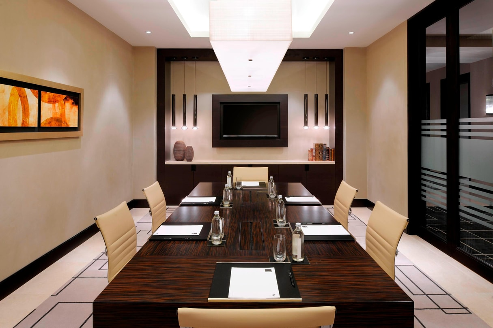
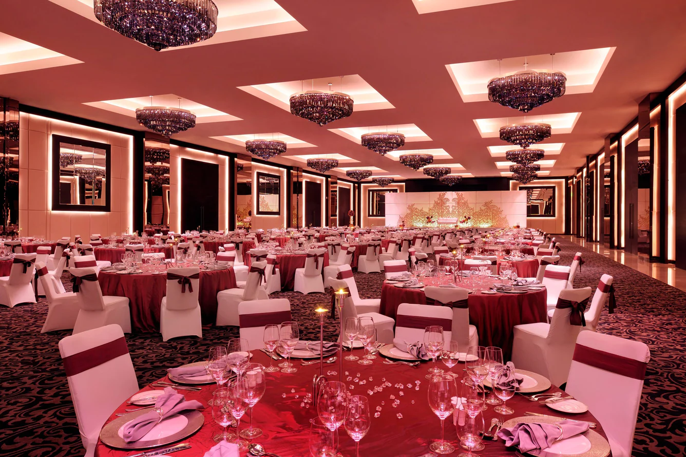
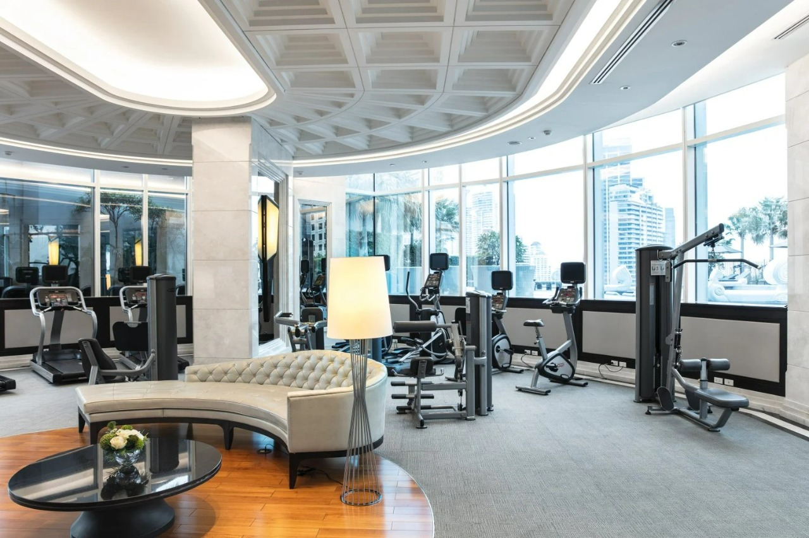
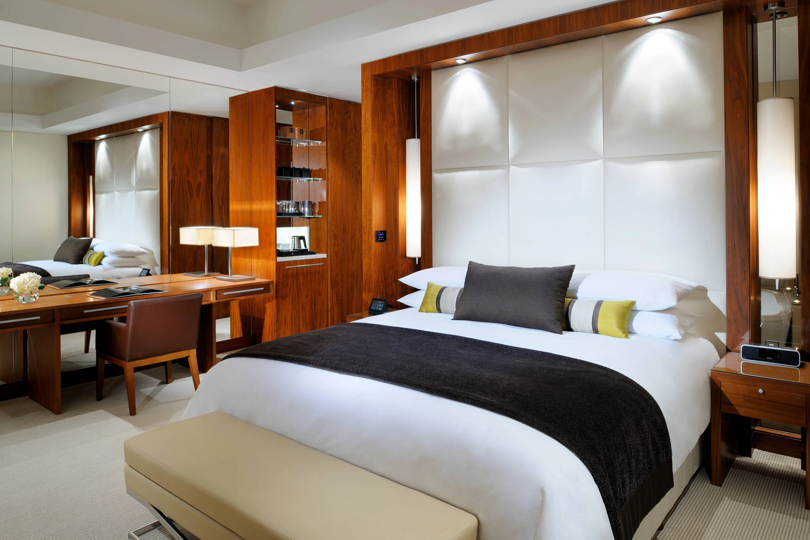
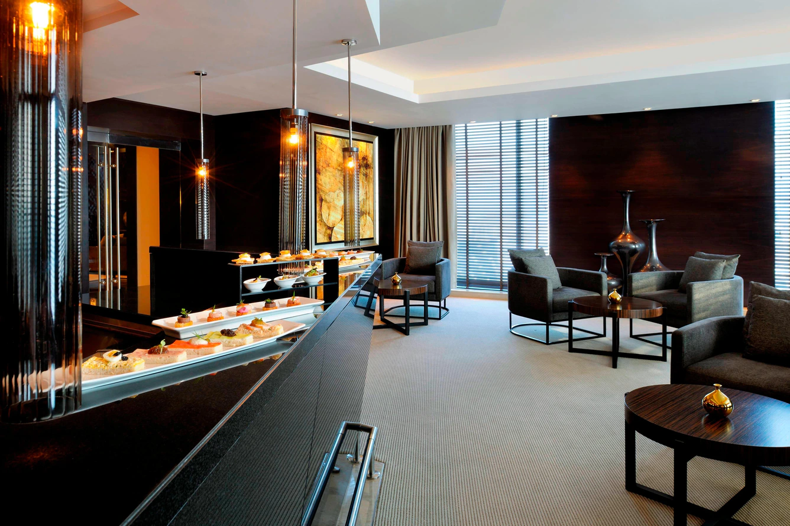
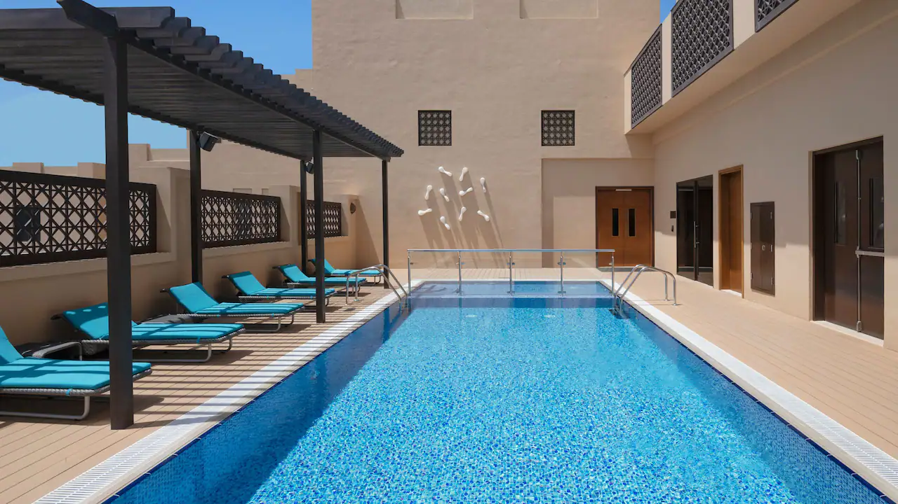

JW Marriott Marquis Hotel welcomes you to the heart of the city's downtown district with modern luxury and award-winning service.Descend into a world that was once the sole preserve of royalty, step onto the soft, white sand beaches at a secluded island or discover the hidden secrets of mist-draped hills with Marbella.Our 5-star hotel gives you inspiring views of the city and gracefully furnished rooms and suites provide a sanctuary with dulex bedding and striking outdoor venues.
Distinctive dining experienceJW Marriott Marquis Hotel plays host to an inspiring collection of more than 15 award-winning restaurants, bars and lounges. Guests will discover a microcosm of authentic international cuisines, which together offer a diverse dining experience; a feast of vibrant flavors, colors, sounds and scents. |
||
|  |
Stunning Meeting HallHost a productive meeting or business gathering in one of our versatile conference venues. All of our meeting rooms offer high-speed internet access, as well as modern audiovisual facilities. Trust our seasoned planning and catering teams to ensure that your event is completely flawless. |
|
Banquet HallWith luxurious accommodation and an incredible choice of cuisines from around the world, the Marbella Grand is an ideal wedding venue. Taking romance to new heights, the hotel provides a world-class team of wedding experts, over 8,000 sqm of flexible indoor and outdoor event space, and several stunning venues for pre and post-wedding functions. |
 | |
|  |
Lifestyle & FitnessIf you’re interested in fitness, you’ll find that we have all the weights and equipment you need for a rigorous training session, and qualified instructor to help you use them. We offer a host of other facilities for relaxation and recreation that will make you want to linger, long after your session is done. Hotel also features a SPA with 6 treatment rooms. |
|
Aesthetic roomsThoughtfully designed around the needs of today’s modern traveller, our 44 sqm Deluxe guest rooms provide a king or twin bed arrangement, a separate shower and bath facilities, and complimentary high-speed Internet among many other features. |
 |  |
Executive LoungeDINE, MEET, WORK OR CELEBRATE.Along with spectacular views, the lounge offers complimentary breakfast, different snacks during the evening, all-day refreshments along with concierge and business services. Available for guests staying in Executive Rooms and Suites, and for Marriott Rewards Platinum and above Guests. Location: 37th floor, Tower A. |
Rooftop Swimming poolEnjoy complimentary access to the rooftop temperature controlled swimming pool. It is
located at the rooftop of the hotel that is a perfect place to relax and enjoy the view
of the city at the same time. |
 | |
Parking and TransportationThe hotel offers secure onsite secured parking facilities 24 hours a day
for all hotel guests and visitors to our restaurants, the banquet events and guests.
A number of 105 guest vehicles can be accommodated in the premises of the hotel.
However, additional parking requirement can be fulfilled if a prior notice of 48 hours
is provided to the hotel. |
||